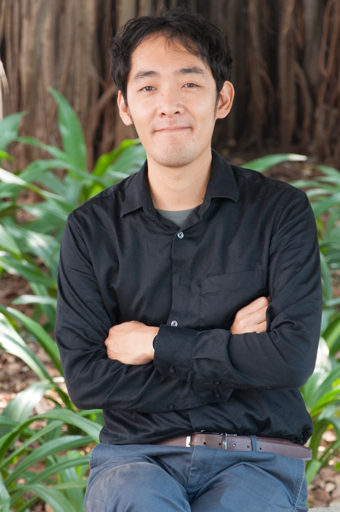

Department of Metallurgical & Materials Engineering
Indian Institute of Technology Madras
Research Highlight
Our work explores precursor-derived ceramic systems with tailored surface chemistry for small-molecule activation.
By integrating synthesis, structural analysis, and first-principles calculations, we aim to understand adsorption mechanisms and structure–reactivity relationships in functional ceramic materials.

PreCAM Lab
Precursor Chemistry for Advanced Materials (PreCAM) Lab explores novel materials design guided by an elemental strategy rooted in precursor chemistry. Our research spans precursor-derived ceramics, semiconductors, hybrid materials, and catalytic systems. By integrating materials synthesis, structural and chemical characterization, and Density Functional Theory (DFT)-based analysis, we aim to establish rational structure–composition–function relationships in functional materials.
The lab addresses broad challenges including catalysis, environmentally sustainable materials development, and materials for energy and environmental applications, with surface chemistry and small-molecule activation (e.g., CO₂, H₂) as a central research theme.
Roadmap
- 2025: Launch lab operations and establish core workflows for precursor synthesis, ceramic conversion, and materials characterization.
- 2028: Establish the PreCAM Lab as a hub for precursor chemistry research in advanced materials, enabling systematic studies of composition, structure, and surface reactivity.
- 2030: Extend the platform to 2D/3D framework design and nano-confinement chemistry, supported by in situ / operando spectroscopy capabilities and data-driven modeling.
Core Research Directions
- Elemental strategy for novel materials design
- Precursor-derived ceramics and hybrid materials (via polymer- or molecule-derived routes)
- Catalysis and surface reaction control
- Surface chemistry and small-molecule activation (CO₂, H₂)
- (Oxy)nitride ceramics and photocatalytic materials
- Electronic structure analysis using Density Functional Theory (DFT)
- 2D materials and framework systems for reactivity under nano-confinement
Research Fields & Network

Profile & Links

ORCID:
https://orcid.org/0000-0001-5147-4589
LinkedIn:
www.linkedin.com/in/shotaro-tada-9133aa180
Contact
Email: shotaro.tada[at]zmail.iitm.ac.in
Office: KCB 242
Krishna Chivkukula Block (New Academic Complex 1)
Department of Metallurgical and Materials Engineering
Indian Institute of Technology Madras
Chennai – 600036
Tamil Nadu
INDIA